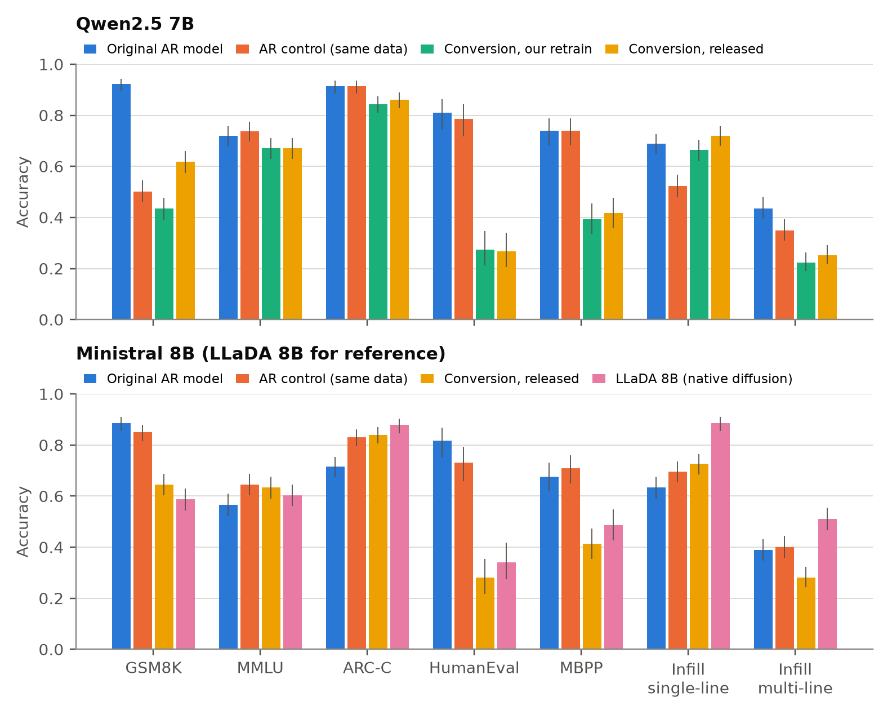
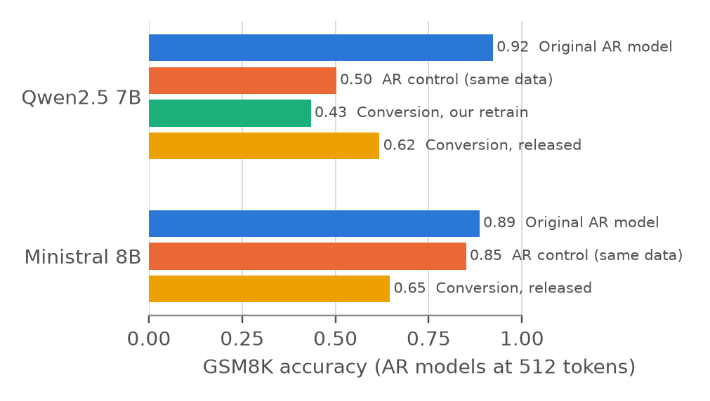
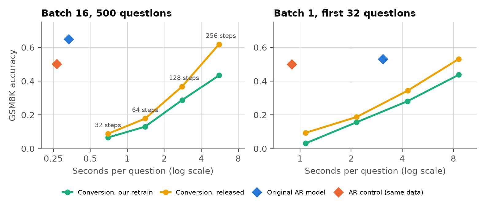
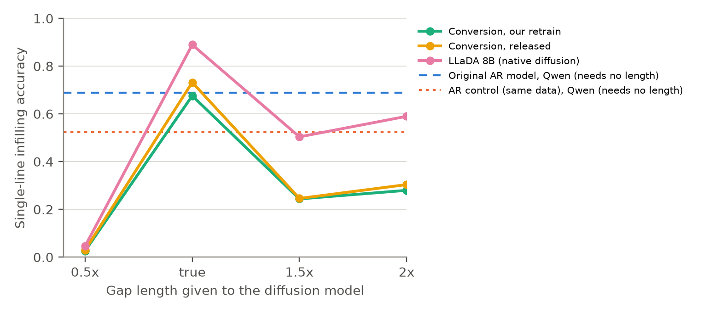

| Aryan Kumar261110012 | Manoj Kumar Parida251140013 | Rajdatta Kohale251140018 | Anuj Chaudhary210167 |
| Mentor TA | Vikas Kushwaha |
| Code | github.com/akode2803/cs787-diffusion-conversion |
| Project folder | drive.google.com/drive/folders/1rKAYdVt2WyketIIOP5Pch_0L2slWWNuA (video, report, weights, results) |
| Trained adapters | drive.google.com/drive/folders/1yVh_LSR7i7sPPRZjECHNl1wOB88NTijv |
| Video | drive.google.com/file/d/1S8Fb_2TeZrydohgISQ9e-I_s4oOKz5QO/view |
Abstract. BYOD [10] converts a frozen autoregressive (AR) chat model into a masked-diffusion language model by training one LoRA adapter for about three GPU-hours. It compares each conversion only with the unchanged original model, so it cannot separate the effect of diffusion from the effect of fine-tuning on BYOD's data. We train an AR LoRA control on the same data, with the same adapter, updates and order, for Qwen2.5 7B and Ministral 8B, and evaluate the original model, the control, our retrained conversion, the released conversions and LLaDA 8B on up to 500 examples per task. Holding data fixed, diffusion costs 30–46 points on code generation on both backbones. On Qwen most of the GSM8K drop is caused by the data rather than by diffusion (original 0.92 → control 0.50). The conversions are 17× slower than the original model at batch 16; using fewer steps makes them faster, but at every step count they are worse than an AR model at the same speed. Conversion beats the control at single-line code infilling on Qwen, but only when told the exact gap length: with 1.5× the length, accuracy falls from 0.73 to 0.25. Taught 1,000 new facts with the name in the prompt, the conversion learns 999 forward and answers none in reverse, the same as the AR control; taught the same facts as plain statements, the AR control memorises them and the conversion does not, so whether masked training helps reverse recall remains untested. Conversion is cheap and works, but none of diffusion's claimed advantages survives a fair control here without qualification.
Summary of findings: claimed advantages of diffusion under a same-data control
| Claimed advantage | Finding | Verdict |
|---|---|---|
| Faster parallel decoding | 17× slower than the original model per answer at batch 16. Each step re-reads the whole sequence with no KV cache. | No |
| Adjustable compute per answer | The number of denoising steps fixes the work per answer in advance, and time falls linearly with it; every setting, however, lies below the AR speed–accuracy curve. | Present, below AR |
| Better infilling from bidirectional context | Beats the same-data AR control on single-line code infilling (+0.14), but only when told the exact gap length; at 1.5× the length it drops from 0.73 to 0.25. | Only with known length |
| Robustness to the reversal curse | With the name in the prompt, neither model answers any reverse question; with name-free training, the conversion did not learn the facts. | Not observed |
With BYOD's data held fixed, diffusion costs 30–46 points on code. On Qwen, most of the maths drop BYOD reports is caused by the training data, not by diffusion (0.92 → 0.50 for an AR model trained on the same data).
A GSM8K answer generated by BYOD-Qwen at 256 and at 32 steps
Question (GSM8K): “Ali had $21. Leila gave him half of her $100. How much does Ali have now?” Correct answer: 71.
| BYOD-Qwen with 256 steps: one token per step, answer correct | |
|---|---|
| step 1 | Le░░░░░░░░░░░░░░░░░░░░░░░░░░░░░░░░░░ |
| step 6 | Leila gave Ali $░0░░░░░░░░░░░░░░░░░░░░░░░░░░░░ |
| step 11 | Leila gave Ali $100 / 2░░░░░░░░░░░░░░░░░░░░░░░░ |
| step 21 | Leila gave Ali $100 / 2 = $50. ⏎ Ali now has $░░ +░░░░░░░░░░░░ |
| step 256 | Leila gave Ali $100 / 2 = $50. ⏎ Ali now has $21 + $50 = $71. ⏎ #### 71 |
| The same model with 32 steps: eight tokens per step, 8× less compute | |
| final | Leila gave $10000/221=<<1500/21=55>>55 to Ali. ⏎ Ali now $21+555=21+55=<<55+5=777>>7755 ⏎ #### … |
░ is a position still masked. Recorded outputs of the released BYOD-Qwen2.5 conversion, replayable in notebooks/tour_of_results.ipynb. Tokens committed in the same step cannot see each other, so with eight per step the arithmetic falls apart. The trade-off is quantified in §3.3.
Diffusion language models generate an answer by starting from a block of mask tokens and filling in positions over several steps, in any order. Four advantages are commonly claimed for them: parallel decoding should be faster than writing one token at a time; the number of denoising steps should give a compute dial that left-to-right decoding lacks; bidirectional attention should make filling a gap in the middle of text natural; and training on randomly masked text, rather than left-to-right prediction, has been suggested as a way around the reversal curse, where a model taught "A is B" cannot answer "who is B?" [3]. Training such a model from scratch is expensive: LLaDA 8B [11] used about 130,000 GPU-hours, according to BYOD.
BYOD makes the question cheap to study. It keeps an AR model's weights frozen, makes attention bidirectional, and trains a rank-1024 LoRA adapter [9] on BYOD's chat data to predict masked answer tokens. Each conversion takes 3.1–4.0 hours on one Colab GPU, and BYOD-Gemma averages 0.506 over nine benchmarks against LLaDA's 0.519. But BYOD's AR columns are the unchanged original models. Any difference between a conversion and its original therefore mixes two effects: what diffusion does, and what 25,000 updates on BYOD's data do. BYOD also reports no wall-clock speed, no real infilling task (its only infilling check copies the right context) and no reversal test, and it uses 125 examples per task (roughly ±8 points).
Contribution. We add the missing control: an AR LoRA adapter trained on the same data, in the same order, with the same rank, targets, learning rate, schedule and number of updates, differing only in causal attention and the next-token loss. With it we measure, on two backbones and up to 500 examples per task:
All hypotheses were written down before the data.
We use eight evaluation arms. For Qwen2.5 7B Instruct [13]: the original model; our AR control; our retrain of the
BYOD conversion with BYOD's paper.yaml recipe; and the released BYOD-Qwen adapter. For Ministral 8B
Instruct 2410: the original, our AR control and the released BYOD-Ministral adapter (we had no budget for a second
retrain). LLaDA 8B Instruct, trained as a diffusion model from scratch, serves as a shared reference. All arms
load the base models at BYOD's pinned revisions, and BYOD's code is pinned at commit 211d054.
Training. Both the control and the conversion use BYOD's data (Ruurd/LAD-training-1m-256,
256-token sequences), 25,000 updates at batch 16, learning rate 10−5 with cosine schedule and 100 warm-up
steps, LoRA rank 1024 (α = 1024) on q_proj and v_proj, and seed 42. We checked that the two
runs see identical batches by comparing batch ids at updates 100, 200 and 25,000. The control differs in four
respects: causal attention, clean (unmasked) input, next-token loss on answer tokens, and no padding loss (BYOD weights
answer and padding positions 0.9/0.1). Training took 3.0–3.3 h per run on one RTX PRO 6000 (Colab G4). Rank 1024 is not low-rank in practice. On the value projection the update can be full rank, because its output is only 512 wide on Qwen and 1,024 on Ministral (grouped-query attention); on the query projection it is 29% (Qwen) and 25% (Ministral) of full rank. The adapters hold 323M (Qwen) and 491M (Ministral) trainable parameters, 4–6% of the model. The conversions trail their originals despite this capacity, so the gaps below are unlikely to come from an adapter that is too small.
One training step of the conversion and of the AR control (simplified)
BYOD conversion (BYOD's trainer, run by t = uniform(0.001, 1) # noise level
x = tokens.clone()
x[answer & (rand < t)] = MASK # hide tokens
h = model(x, attn="bidirectional")
loss = CE(head(h[masked]),
tokens[masked]) / t # SAME position |
AR control, ours (
x = tokens # nothing hidden
h = model(x, attn="causal")
loss = CE(head(h[i]),
tokens[i + 1]) # NEXT position |
Everything else is shared: the frozen base model, the rank-1024 LoRA on Q and V, the 400,000 training examples and their order, learning rate, schedule and 25,000 updates. So any difference between the two arms is the diffusion part itself. Simplified sketch: BYOD also weights answer and EOS-padding tokens 0.9/0.1, and the control scores answer tokens only. A conversion can be reproduced with BYOD's trainer through train/retrain.py (3–4 GPU-hours); the resulting adapter can be merged into the base weights.
Every arm gets the same chat prompt (system "You are a helpful assistant.") and the same budget: 256 tokens or positions for GSM8K, HumanEval and MBPP, 64 for MMLU and ARC-C. BYOD's prompts, example selection, answer extraction and scoring are reused unchanged. Diffusion arms use the LLaDA low-confidence sampler with one token committed per step (256 steps for 256 positions) unless stated. Sample sizes: the first 500 GSM8K [6] and ARC-C [5] questions, 500 seeded MMLU [8] questions, all 164 HumanEval [4] and 257 MBPP-sanitized [1] problems, and 500 seeded examples from each of HumanEval single-line and multi-line infilling [2]. We report Wilson 95% intervals, and paired differences with bootstrap 95% intervals and McNemar's exact test.
Two fairness corrections. (1) The original AR models write long answers: at 256 tokens, 141 of 500 Ministral GSM8K answers were cut off. We therefore rescored the AR original and control on GSM8K and HumanEval at 512 tokens. The diffusion arms almost never fill their 256 positions (at most 12 answers per task, none correct), so their numbers stand. (2) In infilling, a diffusion arm keeps the code around the gap fixed and can only write inside it, whereas an AR arm rewrites the whole function and may change that code. We report a strict score, where an AR answer that changed the surrounding code counts as wrong (marked * in tables), and keep the lenient score in the appendix files.
“Efficient conversion does not yet produce efficient generation.”Kuiper and Bagheri (2026), §7 (Limitations).
The loss is concentrated in code: 30–46 points on HumanEval and MBPP on both backbones, against at most 7 points on MMLU and ARC-C.

| Task | Original | AR control | Conversion (ours) | Conversion (released) |
|---|---|---|---|---|
| GSM8K | 0.922 0.90–0.94 256 tok: 0.648 | 0.502 0.46–0.55 256 tok: 0.502 | 0.434 0.39–0.48 | 0.618 0.57–0.66 |
| MMLU | 0.720 0.68–0.76 | 0.738 0.70–0.77 | 0.672 0.63–0.71 | 0.672 0.63–0.71 |
| ARC-C | 0.914 0.89–0.94 | 0.914 0.89–0.94 | 0.844 0.81–0.87 | 0.862 0.83–0.89 |
| HumanEval | 0.811 0.74–0.86 256 tok: 0.695 | 0.787 0.72–0.84 256 tok: 0.726 | 0.274 0.21–0.35 | 0.268 0.21–0.34 |
| MBPP | 0.739 0.68–0.79 | 0.739 0.68–0.79 | 0.393 0.34–0.45 | 0.416 0.36–0.48 |
| Infilling, single-line* | 0.688 0.65–0.73 | 0.524 0.48–0.57 | 0.664 0.62–0.70 | 0.720 0.68–0.76 |
| Infilling, multi-line* | 0.436 0.39–0.48 | 0.350 0.31–0.39 | 0.224 0.19–0.26 | 0.252 0.22–0.29 |
| Task | Original | AR control | Conversion (released) | LLaDA 8B |
|---|---|---|---|---|
| GSM8K | 0.886 0.86–0.91 256 tok: 0.710 | 0.850 0.82–0.88 256 tok: 0.838 | 0.646 0.60–0.69 | 0.588 0.54–0.63 |
| MMLU | 0.566 0.52–0.61 | 0.646 0.60–0.69 | 0.634 0.59–0.68 | 0.604 0.56–0.65 |
| ARC-C | 0.716 0.67–0.75 | 0.830 0.79–0.86 | 0.840 0.81–0.87 | 0.878 0.85–0.90 |
| HumanEval | 0.817 0.75–0.87 256 tok: 0.659 | 0.732 0.66–0.79 256 tok: 0.665 | 0.280 0.22–0.35 | 0.341 0.27–0.42 |
| MBPP | 0.677 0.62–0.73 | 0.708 0.65–0.76 | 0.412 0.35–0.47 | 0.486 0.43–0.55 |
| Infilling, single-line* | 0.634 0.59–0.68 | 0.696 0.65–0.73 | 0.726 0.69–0.76 | 0.886 0.86–0.91 |
| Infilling, multi-line* | 0.388 0.35–0.43 | 0.400 0.36–0.44 | 0.282 0.24–0.32 | 0.510 0.47–0.55 |
| Task (256 tokens for all) | Qwen: control − our conversion | Qwen: control − released conversion | Ministral: control − released conversion |
|---|---|---|---|
| GSM8K | +0.068 +0.02 to +0.12 | -0.116 -0.17 to -0.07 | +0.192 +0.15 to +0.24 |
| MMLU | +0.066 +0.03 to +0.10 | +0.066 +0.03 to +0.10 | +0.012 -0.03 to +0.05 |
| ARC-C | +0.070 +0.04 to +0.10 | +0.052 +0.03 to +0.08 | -0.010 -0.04 to +0.02 |
| HumanEval | +0.451 +0.37 to +0.54 | +0.457 +0.38 to +0.54 | +0.384 +0.30 to +0.46 |
| MBPP | +0.346 +0.28 to +0.41 | +0.323 +0.26 to +0.39 | +0.296 +0.23 to +0.36 |
| Infilling, single-line* | -0.140 -0.20 to -0.08 | -0.196 -0.25 to -0.14 | -0.030 -0.08 to +0.02 |
| Infilling, multi-line* | +0.126 +0.08 to +0.17 | +0.098 +0.05 to +0.15 | +0.118 +0.07 to +0.17 |
Table 3 isolates the diffusion objective. On both backbones the conversion is far worse at code generation: 45 and 35 points behind the control on HumanEval and MBPP for Qwen, and 38 and 30 points for Ministral. Multi-line infilling also favours the control by 10–13 points. Knowledge and multiple-choice tasks are close: on Ministral the differences on MMLU and ARC-C are within ±1.2 points and not significant; on Qwen the control leads by 5–7 points. Our retrained conversion matches the released adapter within ±0.03 on five of seven tasks; it is worse on GSM8K (0.434 against 0.618) and on single-line infilling (0.664 against 0.720), for reasons we did not isolate.
Qwen on GSM8K: original 0.92 → AR control trained on the same data 0.50 → conversions 0.43–0.62. The data explains most of the drop that looked like a cost of diffusion.

On Qwen, fine-tuning on BYOD's data alone takes GSM8K from 0.922 to 0.502, with no diffusion involved: the control learned BYOD's terse style and answers in a median of 7 tokens, skipping the working. The released conversion (0.618) is even better than this control. On Ministral the same data costs only 3.6 points (0.886 → 0.850) and diffusion costs 20 (→ 0.646). So whether BYOD's maths gap is a cost of diffusion depends on the backbone; comparing a conversion only with its original model, as BYOD does, would have attributed the whole Qwen gap to diffusion.
Eight times fewer steps makes the conversion eight times faster (5.57 s → 0.70 s per question) and seven times less accurate (0.618 → 0.088 on GSM8K).

| Qwen arm | GSM8K acc. batch 16 | s / question batch 16 | HumanEval batch 16 | GSM8K batch 1 | s / question batch 1 |
|---|---|---|---|---|---|
| Released, 32 steps | 0.088 | 0.70 | — | 3/32 | 1.08 |
| Released, 64 steps | 0.178 | 1.40 | 0.000 | 6/32 | 2.15 |
| Released, 128 steps | 0.368 | 2.79 | 0.091 | 11/32 | 4.30 |
| Released, 256 steps | 0.618 | 5.57 | 0.268 | 17/32 | 8.59 |
| Ours, 32 steps | 0.066 | 0.70 | — | 1/32 | 1.08 |
| Ours, 64 steps | 0.130 | 1.40 | 0.000 | 5/32 | 2.15 |
| Ours, 128 steps | 0.288 | 2.79 | 0.104 | 9/32 | 4.30 |
| Ours, 256 steps | 0.434 | 5.59 | 0.274 | 14/32 | 8.60 |
| Original AR | 0.648 | 0.33 | 0.695 | 17/32 | 3.07 |
| AR control | 0.502 | 0.27 | 0.726 | 16/32 | 0.89 |
At one token per step the conversion takes 5.6 s per GSM8K question at batch 16, against 0.33 s for the original model, which writes much longer answers (median 223 tokens): about 17× slower. Committing several tokens per step makes generation proportionally faster, but accuracy falls just as fast: the released conversion drops from 0.618 at 256 steps to 0.368 at 128, 0.178 at 64 and 0.088 at 32, and HumanEval drops to 0 at 64 steps. At batch 1 the original model answers in 3.07 s with 17/32 correct; the conversion needs 8.6 s for the same 17/32, and at 128 steps it is still slower (4.3 s) and worse (11/32). No step count puts the conversion on or above the AR speed–accuracy curve. The batch-1 test uses only 32 questions and should be read as a pilot.
A compute dial AR models do not have. The step count is a genuine control that autoregressive decoding lacks. It fixes the work spent on an answer before generation starts, independently of how long the answer is, and time scales linearly with it (5.57 s per question at 256 steps, 0.70 s at 32, Table 4). A non-thinking AR model has no such switch: it spends one forward pass per token, so its cost is set by the length of what it writes. Reasoning modes move compute only softly, through how long the model chooses to think. The dial works mechanically as advertised. For these converted models, though, every setting lies below the AR curve in Figure 3: turning it down buys speed at a steep cost in accuracy, and turning it up never catches the AR model. Whether native diffusion pretraining gives a better dial is open; LLaDA was measured here only at 256 steps.
Told the true gap length, the Qwen conversions score 0.68–0.73 against 0.52 for the AR control. Given 1.5× the length, they fall to about 0.25.
HumanEval single-line infilling, problem 55, at three gap lengths
def fib(n: int):
"""Return n-th Fibonacci number."""
░░░░░░░░░░░░ ← the missing line; correct answer: if n == 0:
return 0
if n == 1:
return 1
return fib(n - 1) + fib(n - 2)
| BYOD-Qwen, true length (7) | if n == 0: passes |
| BYOD-Qwen, 1.5× length (10) | if n == 0: ⏎ return: fails (spare positions filled with unrelated tokens) |
| LLaDA 8B, 1.5× length (12) | # Base cases ⏎ if n <= 0: passes (spare positions used for a comment) |
Recorded outputs from our evaluation. Numbers in brackets are the masked positions the model was given.
Single-line infilling is the one task where conversion beats the same-data control on Qwen: our conversion by 14 points and the released one by 20 (Table 3). It does not on Ministral (−3 points, not significant). But every diffusion infilling result above was obtained by telling the model the exact length of the gap, in tokens, and filling exactly that many mask positions. The AR arms receive no such information. To measure how much the result depends on it, we reran single-line infilling for the three diffusion arms with 0.5×, 1.5× and 2× the true length.

| Diffusion arm | 0.5× length | true length | 1.5× length | 2× length |
|---|---|---|---|---|
| Qwen conversion (ours) | 0.026 raw 0.026 | 0.676 raw 0.664 | 0.244 raw 0.132 | 0.280 raw 0.146 |
| Qwen conversion (released) | 0.030 raw 0.030 | 0.732 raw 0.720 | 0.246 raw 0.138 | 0.304 raw 0.180 |
| LLaDA 8B | 0.046 raw 0.044 | 0.890 raw 0.886 | 0.504 raw 0.436 | 0.590 raw 0.566 |
With too few positions every arm fails, as it must. With spare positions the conversions typically write the correct line and then fill the leftover positions with junk, most often a closing code fence, instead of padding. Cutting each answer at its first code fence, as the AR scorer already does, recovers part of the loss, but the conversions still fall from 0.68–0.73 to about 0.25 at 1.5× and 0.28–0.30 at 2×, far below the Qwen AR control (0.524), which needs no length at all. LLaDA is much more robust (0.50 at 1.5×, 0.59 at 2×), so a natively trained diffusion model handles spare positions far better than a converted one. The infilling advantage of conversion is therefore real only when the gap length is known in advance, for example in a fixed-size slot.
With the name in the prompt, both models answer 0 of 1,000 reverse questions after learning 999–1,000 forward. With name-free training, the conversion learned 9 of 1,000 facts forward; the AR control learned 300.
We generated 1,000 invented people with invented roles ("Ostura Jaskisto is the lead composer of the sunken compass") and taught them in one direction only: four phrasings of "name → role", shuffled, to the Qwen AR control and our Qwen conversion, each with its own training objective, identical data order, learning rate 5×10−5 and batch 16. We then asked "Who is Ostura Jaskisto?" (forward) and "Who is the lead composer of the sunken compass?" (reverse), scoring by required words. Neither model knew any fact before training.
One item of the reversal test
| taught | “Ostura Jaskisto is the lead composer of the sunken compass.” (1,000 invented facts like this, name first) |
| forward | “Who is Ostura Jaskisto?” → both models answer correctly (999–1000 of 1,000 after 10,000 updates) |
| reverse | “Who is the inventor of the violet canal?” (the role of another of the 1,000 people) AR control: answers with an invented name, such as “Jean-Pierre Leclair”. Diffusion conversion: “The inventor of the violet canal is the inventor of the violet canal.” (0 of 1,000 for both) |
| Qwen, training | AR control | Conversion (ours) | ||
|---|---|---|---|---|
| forward | reverse | forward | reverse | |
| Before training | 0/1000 | 0/1000 | 0/1000 | 0/1000 |
| 2,000 updates, name in prompt | 1000/1000 | 0/1000 | 66/1000 | 0/1000 |
| 10,000 updates, name in prompt | 1000/1000 | 0/1000 | 999/1000 | 0/1000 |
| 10,000 updates, name-free prompts | 300/1000 | 0/1000 | 9/1000 | 2/1000 |
After 2,000 updates the conversion had learned only 6.6% of the facts forward, so its reverse score said nothing. After 10,000 updates it knows 999 of 1,000 forward and still answers none in reverse, exactly like the AR control. No reverse answer from either model contains any of the 1,000 trained names, right or wrong: the AR control invents plausible names ("Jean-Pierre Leclair"), and the conversion repeats the question back in all 1,000 cases ("The inventor of the violet canal is the inventor of the violet canal"). This agrees with DiffER [7], which finds the reversal curse in natively trained diffusion LLMs.
A flaw in that design, and a corrected run. All four training phrasings above name the person in the question ("Who is Ostura Jaskisto?" → "Ostura Jaskisto is the …"), and BYOD's loss covers only answer tokens. When a name token is masked in the answer, the model can copy it from the question, so it is never forced to recover the name from the description, which is how masked training is supposed to help. We therefore reran both arms with name-free prompts ("State a fact." → "Ostura Jaskisto is the lead composer of the sunken compass."), with the same facts, order, updates and learning rate, and the same test questions. The AR control now answers 30% forward, probably because it must carry a statement over to a question it never saw, and none in reverse. Its reverse answers are classic reversal-curse errors: 843 of 1,000 repeat the asked description but attach a trained name of the wrong person, and 559 of its forward answers are trained facts word for word. The conversion learned the format but not the facts. Only 3 of its 1,000 forward answers and 1 reverse answer are trained facts, and only 20–29% even use a trained name ("Pellura Paskane", which is not one of them, appears 245 times). Its 9 forward hits are above chance (with its answers shuffled across questions, 200 shuffles give 1.0 on average and at most 4), so it keeps a trace of a few facts; its 2 reverse hits are at chance (0.3 on average, at most 2), and neither is a fact it answers forward. So under identical data and budget, the masked-diffusion conversion failed to memorise facts that the AR control memorised. The reverse question is still open for conversions: a model that cannot recall a fact either way says nothing about direction. Pan et al. [12] study masked ("demasking") fine-tuning for knowledge injection in AR and diffusion models; a higher learning rate or many more updates may be needed for the masked objective, which we did not test. We did not teach LLaDA the facts.
Kendall τ of 0.88–0.95 on GSM8K and HumanEval: although free to fill positions in any order, the converted models write nearly left to right.
| Arm | Median Kendall τ, commit order vs position | Doubled words per 100, GSM8K | ||||
|---|---|---|---|---|---|---|
| GSM8K | HumanEval | MMLU | Infill single | Infill multi | ||
| Qwen conversion (ours) | 0.88 | 0.94 | 0.71 | 0.79 | 0.83 | 4.73 |
| Qwen conversion (released) | 0.93 | 0.95 | 0.72 | 0.78 | 0.82 | 1.90 |
| Ministral conversion (released) | 0.93 | 0.93 | 0.71 | 0.67 | 0.75 | 1.32 |
| LLaDA 8B | 0.30 | 0.89 | 0.67 | 0.64 | 0.47 | 0.70 |
| Qwen original (AR) | left to right by construction (τ = 1) | 0.69 | ||||
| Qwen AR control | left to right by construction (τ = 1) | 0.41 | ||||
Although a diffusion model may commit positions in any order, the conversions decode almost left to right on GSM8K and HumanEval (Kendall τ 0.88–0.95) and less so on infilling (0.67–0.83), where the context on the right helps. LLaDA is far less sequential on GSM8K (0.30). Parallel decoding leaves visible damage: our retrained conversion repeats an adjacent word 4.7 times per 100 words on GSM8K ("fiber fiber"), against 0.7 for the original model.
We wrote five hypotheses down before running any evaluation. Two held (H3, H5), two held only in part (H1, H4), and one was not supported (H2). The predictions we got wrong are the most informative: we expected the maths gap to come from diffusion, and it came mostly from the data.
| Pre-registered hypothesis | Verdict | Evidence |
|---|---|---|
| H1: conversions beat AR controls on infilling at the true gap length | Partly | Qwen single-line yes (+0.14, +0.20); Ministral no; multi-line reversed; collapses without the exact length (§3.4) |
| H2: conversions beat AR controls on reversed facts | Not supported; untested in the fair format | Name in prompt: 0/1000 for both after 999–1000/1000 forward. Name-free: the conversion did not learn the facts (9/1000 forward), the AR control did (§3.5) |
| H3: at matched accuracy, conversions are not faster than AR | Supported | No step count reaches the AR speed–accuracy curve (§3.3) |
| H4: the GSM8K gap comes from conversion; controls stay within 5 points of the original | Rejected on Qwen, supported on Ministral | Qwen control −42 points; Ministral −3.6 (§3.2) |
| H5: commit order is mostly left-to-right on maths, less so on infilling | Supported | τ 0.88–0.93 on GSM8K vs 0.67–0.83 on infilling (§3.6) |
paper.yaml (our retrain is 18 points worse on
GSM8K, cause not isolated).BYOD shows that an AR chat model can be turned into a working diffusion model for a few GPU-hours. A same-data AR control changes how its results read. Diffusion conversion costs 30–46 points in code generation on two backbones; part of the maths gap that looks like a cost of diffusion is a cost of the training data; the step count trades accuracy for speed, a real compute dial that AR decoding lacks, but at every setting it is behind AR decoding; the infilling advantage depends on knowing the gap length; and the conversion shows no reversal advantage: with the name in the prompt it keeps the curse in full, and without it, it fails to learn the facts that the AR control learns from the same data. A natively trained diffusion model (LLaDA) is clearly better at infilling and more robust to a wrong gap length, which suggests that conversion inherits diffusion's costs faster than its benefits. A fair test of any future conversion method should include a same-data AR control, wall-clock time, and infilling without a length oracle.
For practitioners considering a conversion, the results suggest the following.
Code is public at github.com/akode2803/cs787-diffusion-conversion (folder diffgap/ locally): train/ (AR control, retrain, Colab job launcher with a VM self-stop
guard), eval/ (harness, scorers, analysis), and docs/report/ (this report and its figures,
built from docs/results/summary.json). The trained adapters (Qwen
conversion retrain, Qwen and Ministral AR controls, and the reversal-run adapters) are public on
Google Drive, with loading instructions, so readers can try the models themselves. For a quick look without a GPU, notebooks/tour_of_results.ipynb in the repository replays the main results and shows a diffusion model writing an answer step by step.
Per-example evaluation outputs, the slides and the presentation video are in the shared project Drive folder. The full run used about 325 Colab compute units (G4 at 10.05 CU/h) across two accounts: three 25,000-update
training runs, eight evaluation arms, the step and gap sweeps, and two reversal runs, plus a name-free reversal rerun on an A100 (about 10 CU). Every number in this report is
labelled in docs/FINDINGS.md and its provenance logged in docs/EXPERIMENT_LOG.md.
[1] Austin, J. et al. (2021). Program Synthesis with Large Language Models. arXiv:2108.07732.
[2] Bavarian, M. et al. (2022). Efficient Training of Language Models to Fill in the Middle. arXiv:2207.14255.
[3] Berglund, L. et al. (2023). The Reversal Curse: LLMs trained on "A is B" fail to learn "B is A". arXiv:2309.12288.
[4] Chen, M. et al. (2021). Evaluating Large Language Models Trained on Code. arXiv:2107.03374.
[5] Clark, P. et al. (2018). Think you have Solved Question Answering? Try ARC, the AI2 Reasoning Challenge. arXiv:1803.05457.
[6] Cobbe, K. et al. (2021). Training Verifiers to Solve Math Word Problems. arXiv:2110.14168.
[7] He, S., Wei, K., Zeng, X. et al. (2026). DiffER: Diffusion Entity-Relation Modeling for Reversal Curse in Diffusion Large Language Models. arXiv:2601.07347.
[8] Hendrycks, D. et al. (2021). Measuring Massive Multitask Language Understanding. arXiv:2009.03300.
[9] Hu, E. J. et al. (2021). LoRA: Low-Rank Adaptation of Large Language Models. arXiv:2106.09685.
[10] Kuiper, R. J. A. and Bagheri, R. A. (2026). BYOD: Build Your Own DLM – Efficient Autoregressive-to-Diffusion Language Model Conversion. arXiv:2610.41574.
[11] Nie, S. et al. (2025). Large Language Diffusion Models. arXiv:2502.09992.
[12] Pan, X., Hahami, E., Fan, J. et al. (2025). Demasking Fine-Tuning for Knowledge Injection in Autoregressive and Diffusion LLMs. arXiv:2510.09885.
[13] Qwen Team (2024). Qwen2.5 Technical Report. arXiv:2412.15115.